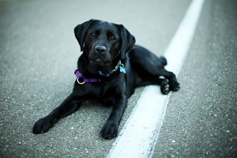

Labrador Retriever
The Labrador is one of the most popular breeds of dog in many countries as a favourite disability assistance breed.
- Other Name: Labrador
- Origin: United Kingdom & Canada
- Weight: Male 29–36 kg; Female 25–32 kg
- Coat: Smooth, short, dense and straight
Labradors are an intelligent breed with a good work ethic and generally good temperaments. Common working roles for Labradors include: hunting, tracking and detection (they have a great sense of smell which helps when working in these areas), disabled-assistance, carting, and therapy work. Approximately 60–70% of all guide dogs in Canada are Labradors. Labrador Retrievers have proven to have a high success rate at becoming guide dogs.